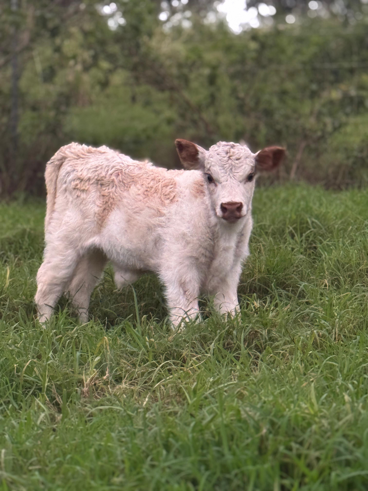

hi! I'm Courtney a current senior here at MIT studying computer science and writing. I'm currently interested in spatial sound, podcasting, and videography, and I thought I'd never say this but I'm also a bit in my spiritual era. If you know anything about tinctures you should contact me!(lowkey not joking)
